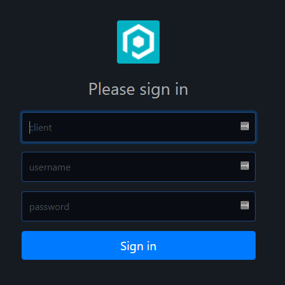

Pages
There are 2 different kinds of pages in Pode.Web which are defined below. Other than the Login page, normal pages can be populated with custom elements. When you add pages to your site they appear on the sidebar for navigation - unless they are specified to be hidden from the sidebar.
Login
To enable the use of a login page, and lock your site behind authentication, is simple! First, just set up sessions and define the authentication method you want via the usual Enable-PodeSessionMiddleware, New-PodeAuthScheme, and Add-PodeAuth in Pode. Then, pass the authentication name into Set-PodeWebLoginPage - and that's it!
Note
Since the login page uses a form to log a user in, the best scheme to use is Forms: New-PodeAuthScheme -Form. OAuth2 also works, as the login page will automatically trigger the relevant redirects to your OAuth2 provider.
Important
If you require a login page, then you must call Set-PodeWebLoginPage before you make any calls to Add-PodeWebPage.
Enable-PodeSessionMiddleware -Duration 120 -Extend
New-PodeAuthScheme -Form | Add-PodeAuth -Name Example -ScriptBlock {
param($username, $password)
return @{
User = @{
ID ='M0R7Y302'
Name = 'Morty'
Type = 'Human'
}
}
}
Set-PodeWebLoginPage -Authentication Example
By default, the Pode icon is displayed as the logo but you can change this by using the -Logo parameter, this takes a literal or relative URL to an image file. If a relative URL is used then the image should be available as public/static content.
Paths
When a login page is configured, Pode will automatically set up the Routes for you at /login and /logout. You can customise these paths to meet your needs by supplying -LoginPath and/or -LogoutPath - when not supplied the default paths mentioned previously will be used.
For example, the following will configure a Login path but with the paths being /auth/login and /auth/logout instead.
Set-PodeWebLoginPath -Authentication ExampleAuth -LoginPath '/auth/login' -LogoutPath '/auth/logout'
IIS
If you're hosting the site using IIS, and want to use Windows Authentication within IIS, then you can set up authentication in Pode.Web via Set-PodeWebAuth. This works similarly to Set-PodeWebLoginPage and sets up authentication on the pages, but it doesn't cause a login page or the sign-in/out buttons to appear. Instead, Pode.Web gets the session from IIS, and then displays the logged-in user at the top - similar to how the login page would after a successful login.
Enable-PodeSessionMiddleware -Duration 120 -Extend
Add-PodeAuthIIS -Name Example
Set-PodeWebAuth -Authentication Example
Custom Fields
By default the Login page will display a login form with Username and Password inputs. This can be overridden by supplying custom Elements to the -Content parameter of Set-PodeWebLoginPage. Any custom content will be placed between the "Please sign in" message and the "Sign In" button.
# setup sessions
Enable-PodeSessionMiddleware -Duration 120 -Extend
# define a new custom authentication scheme, which needs a client, username, and password
$custom_scheme = New-PodeAuthScheme -Custom -ScriptBlock {
param($opts)
# get the client/user/password from the request's post data
$client = $WebEvent.Data.client
$username = $WebEvent.Data.username
$password = $WebEvent.Data.password
# return the data in a array, which will be passed to the validator script
return @($client, $username, $password)
}
# now, add a new custom authentication validator using the scheme you created above
$custom_scheme | Add-PodeAuth -Name Example -ScriptBlock {
param($client, $username, $password)
# check if the client is valid in some database
return @{
User = @{
ID ='M0R7Y302'
Name = 'Morty'
Type = 'Human'
}
}
# return a user object (return $null if validation failed)
return @{ User = $user }
}
# set the login page to use the custom auth, and also custom login fields
Set-PodeWebLoginPage -Authentication Example -Content @(
New-PodeWebTextbox -Type Text -Name 'client' -Id 'client' -Placeholder 'Client' -Required -AutoFocus -DynamicLabel
New-PodeWebTextbox -Type Text -Name 'username' -Id 'username' -Placeholder 'Username' -Required -DynamicLabel
New-PodeWebTextbox -Type Password -Name 'password' -Id 'password' -Placeholder 'Password' -Required -DynamicLabel
)
Which would look like below:

Page
By adding a page to your site Pode.Web will add a link to it on your site's sidebar navigation. You can also group pages so you can collapse groups of them. To add a page to your site you use Add-PodeWebPage, and you can give your page a -Name and an -Icon to display on the sidebar. Pages can either be static or dynamic.
Note
The -Icon is the name of a Material Design Icon, a list of which can be found on their website. When supplying the name, just supply the part after mdi-. For example, mdi-github should be -Icon 'github'.
For example, to add a simple Charts page to your site, to show a Windows counter:
Add-PodeWebPage -Name Charts -Icon 'bar-chart-2' -Content @(
New-PodeWebCard -Content @(
New-PodeWebCounterChart -Counter '\Processor(_Total)\% Processor Time'
)
)
You can split up your pages into different .ps1 files, if you do and you place them within a /pages directory, then Use-PodeWebPages will auto-load them all for you.
Path
A created Page will by default have a generated URL path of /groups/<group-name>/pages/<page-name>. You can customise this URL path you be whatever you want by supplying the -Path parameter to Add-PodeWebPage.
For example, the following page will be accessible at /my-services rather than /pages/Services:
Add-PodeWebPage -Name Services -Path '/my-services' -ScriptBlock { ... }
Home
If you have a Page created that you would like to be your Home page, where users are directed to by default on Login (or by clicking the site's Navigation bar icon), then you can supply the -HomePage switch to Add-PodeWebPage. This will inform Pode.Web that you want this Page to be your Home page.
Add-PodeWebPage -Name 'Home' -Path '/' -Content $section -Title 'Awesome Homepage' -HomePage
Link
If you just need to place a redirect link into the sidebar, then use Add-PodeWebPageLink. This works similarly to Add-PodeWebPage, but takes either a flat -Url to redirect to, or a -ScriptBlock that you can return actions from. Page links can also be grouped, like normal pages.
Flat URLs:
Add-PodeWebPageLink -Name Twitter -Url 'https://twitter.com' -Icon 'twitter' -NewTab
Or a dynamic link:
Add-PodeWebPageLink -Name Twitter -Icon Twitter -ScriptBlock {
Move-PodeWebUrl -Url 'https://twitter.com' -NewTab
}
Group
You can group multiple pages on the sidebar by using the -Group parameter on Add-PodeWebPage, and this will group pages into a collapsible container.
By just supplying the -Group parameter on Add-PodeWebPage Pode.Web will configure a default Group for you. However, you can pre-initialise groups by using New-PodeWebPageGroup, and this will allow you to customise the Display Name; Icons; whether the page counter should be visible or not; and whether the Group itself should be visible or not in the sidebar.
To place a Page into a pre-initialised Group, just use the name of the Group in the -Group parameter as normal.
# initialise a Tools group, with an icon
New-PodeWebPageGroup -Name Tools -Icon Settings
# create a page that uses the above Tools group
Add-PodeWebPage -Name Services -Group Tools -ScriptBlock { ... }
Groups are automatically sorted into alphabetical order, you can customise this using the -GroupOrder parameter on Initialize-PodeWebTemplates. Valid options are:
| Type | Description |
|---|---|
Ascending |
The default value, and sorts Groups alphabetically |
Creation |
Will order Groups in the order they were created |
Descending |
Will order Groups in reverse alphabetical order |
Note
The only exception when Groups are sorted is the "empty" group; this is the Group pages are placed into when no -Group is specified. This Group will always be at the top of the Sidebar.
Groups can also be nested during initialisation, by supplying it a parent group:
# initialise a Tools group
New-PodeWebPageGroup -Name Tools
# initialise a Windows group, with Tools as its parent
New-PodeWebPageGroup -Name Windows -Parent Tools
Additionally, you can show separator lines Before - or After - a group, or page, by using -PassThru and piping the result into Show-PodeWebSidebarSeparator:
# shows a line before the Group name
New-PodeWebPageGroup -Name Tools -PassThru |
Show-PodeWebSidebarSeparator
# shows a line after the Page name
Add-PodeWebPage -Name ExamplePage -Etc -PassThru |
Show-PodeWebSidebarSeparator -Position After
Index
Pages within the sidebar are automatically sorted into alphabetical order, within the scope of the Group they're contained in. You can change the ordering of a Page by using the -Index parameter on Add-PodeWebPage, any Pages with the same index value will still be sorted alphabetically. This can be altered by specifying one of the following values to the -PageOrder parameter on New-PodeWebPageGroup:
| Type | Description |
|---|---|
Ascending |
The default value, and sorts Pages alphabetically |
Creation |
Will order Pages in the order they were created |
Descending |
Will order Pages in reverse alphabetical order |
All Pages by default have an index of [int]::MaxValue, creating a Page with an index lower than this (say, 0) will cause that Page to be sorted to the top of the list of Pages in the sidebar (within the scope of the Group they're in).
Note
The only exception for Page default indexes is the Home Page: if no -Index is supplied, will have a default index of [int]::MinValue instead.
Help Icon
A help icon can be displayed to the right of the page's title by supplying a -HelpScriptBlock to Add-PodeWebPage. This scriptblock is used to return actions such as: displaying a modal when the help icon is clicked; redirecting the user to a help page; or any other possible actions to help a user out.
Static
A static page uses just the -Content parameter; this is a page that will render the same elements on every page load, regardless of payload or query parameters supplied to the page.
For example, this page will always render a form to search for processes:
Add-PodeWebPage -Name Processes -Icon Activity -Content @(
New-PodeWebCard -Content @(
New-PodeWebForm -Name 'Search' -ScriptBlock {
Get-Process -Name $WebEvent.Data.Name -ErrorAction Ignore |
Select-Object Name, ID, WorkingSet, CPU |
New-PodeWebTextbox -Name 'Output' -Multiline -Preformat -ReadOnly |
Out-PodeWebElement
} -Content @(
New-PodeWebTextbox -Name 'Name'
)
)
)
Dynamic
Add dynamic page uses a -ScriptBlock instead of -Content, the scriptblock lets you render different elements depending on query/payload data in the $WebEvent. The scriptblock also has access to a $PageData object, containing information about the current page - such as Name, Group, Access, etc.
For example, the below page will render a table of services if a value query parameter is not present. Otherwise, if it is present, then a page with a code block showing information about the service is displayed:
Add-PodeWebPage -Name Services -Icon Settings -ScriptBlock {
$value = $WebEvent.Query['value']
# table of services
if ([string]::IsNullOrWhiteSpace($value)) {
New-PodeWebCard -Content @(
New-PodeWebTable -Name 'Services' -DataColumn Name -Click -ScriptBlock {
foreach ($svc in (Get-Service)) {
[ordered]@{
Name = $svc.Name
Status = "$($svc.Status)"
}
}
}
)
}
# code-block with service info
else {
$svc = Get-Service -Name $value | Out-String
New-PodeWebCard -Name "$($value) Details" -Content @(
New-PodeWebCodeBlock -Value $svc -NoHighlight
)
}
}
You can also supply -Content while using -ScriptBlock. If the scriptblock returns no data, then whatever is supplied to -Content is treated as the default content for the page.
For example, the below is the same as the above example, but this time the table is set using -Content:
$servicesTable = New-PodeWebCard -Content @(
New-PodeWebTable -Name 'Services' -DataColumn Name -Click -ScriptBlock {
foreach ($svc in (Get-Service)) {
[ordered]@{
Name = $svc.Name
Status = "$($svc.Status)"
}
}
}
)
Add-PodeWebPage -Name Services -Icon Settings -Content $servicesTable -ScriptBlock {
$value = $WebEvent.Query['value']
# use default layouts - in this case, the services table
if ([string]::IsNullOrWhiteSpace($value)) {
return
}
# code-block with service info
$svc = Get-Service -Name $value | Out-String
New-PodeWebCard -Name "$($value) Details" -Content @(
New-PodeWebCodeBlock -Value $svc -NoHighlight
)
}
You can pass values to the scriptblock by using the -ArgumentList parameter. This accepts an array of values/objects, and they are supplied as parameters to the scriptblock:
Add-PodeWebPage -Name Services -Icon Settings -ArgumentList 'Value1', 2, $false -ScriptBlock {
param($value1, $value2, $value3)
# $value1 = 'Value1'
# $value2 = 2
# $value3 = $false
}
No Authentication
If you add a page when you've enabled authentication, you can set a page to be accessible without authentication by supplying the -NoAuth switch to Add-PodeWebPage.
If you do this and you add all elements dynamically (via -ScriptBlock), then there's no further action needed.
If however you're added the elements using the -Content parameter, then certain elements will also need their -NoAuth switches to be supplied (such as charts, for example), otherwise, data/actions will fail with a 401 response.
Sidebar
When you add a page by default it will show in the sidebar. You can stop pages/links from appearing in the sidebar by using the -Hide switch:
Add-PodeWebPage -Name Charts -Hide -Content @(
New-PodeWebCard -Content @(
New-PodeWebCounterChart -Counter '\Processor(_Total)\% Processor Time'
)
)
Hide Navigations
You can hide the sidebar on a page (home or webpage) by using the -NoSidebar switch; useful for dashboard pages:
Add-PodeWebPage -Name Charts -NoSidebar -Content @(
New-PodeWebCard -Content @(
New-PodeWebCounterChart -Counter '\Processor(_Total)\% Processor Time'
)
)
Conversely, you can also hide the top navigation bar by using the -NoNavigation switch as well.
Convert Module
Similar to how Pode has a function to convert a Module to a REST API; Pode.Web has one that can convert a Module into Web Pages: ConvertTo-PodeWebPage!
For example, if you wanted to make a web portal for the Pester module:
Import-Module Pode.Web
Start-PodeServer {
# add a simple endpoint
Add-PodeEndpoint -Address localhost -Port 8090 -Protocol Http
# set the use of templates
Initialize-PodeWebTemplates -Title 'Pester'
# convert module to pages
ConvertTo-PodeWebPage -Module Pester -GroupVerbs
}
Events
The Login and normal Pages support registering the following events, and they can be registered via Register-PodeWebPageEvent:
| Name | Description |
|---|---|
| Load | Fires when the page has fully loaded, including js/css/etc. |
| Unload | Fires when the has fully unloaded/closed |
| BeforeUnload | Fires just before the page is about to unload/close |
To register an event for each page type:
Login: you'll need to use-PassThruonSet-PodeWebLoginPageand pipe the result inRegister-PodeWebPageEvent.Webpage: you'll need to use-PassThruonAdd-PodeWebPageand pipe the result inRegister-PodeWebPageEvent.
For example, if you want to show a message on a Page just before it closes:
Add-PodeWebPage -Name Example -Content $some_layouts -PassThru |
Register-PodeWebPageEvent -Type BeforeUnload -ScriptBlock {
Show-PodeWebToast -Message "Bye!"
}
Or on the Login page, after it's finished loading (note: you will need to use the -NoAuth switch):
Set-PodeWebLoginPage -Authentication Example -PassThru |
Register-PodeWebPageEvent -Type Load -NoAuth -ScriptBlock {
Show-PodeWebToast -Message "Hi!"
}